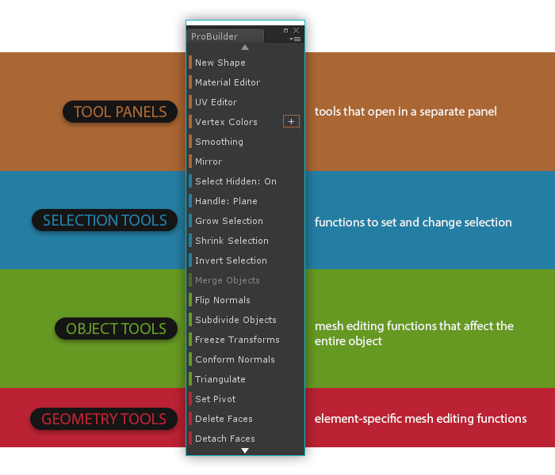
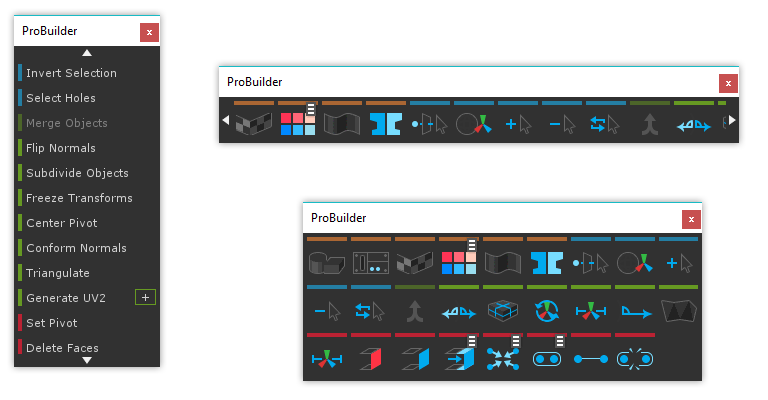

Most ProBuilder commands are available in the ProBuilder Window:
Tools/ProBuilder/ProBuilder Window
A second toolbar in the active scene view shows the current editing mode.
Tool Categories
The Toolbar is color-coded to help you quickly choose tools by type:
- Orange for Tool Panels
- Blue for Selection Tools
- Green for Object Actions
- Red for Geometry Actions (Vertex, Edge, Face)

Resizing and Text vs Icon Mode
You can resize the Toolbar however you like. ProBuilder will re-order the icon or text contents to best fit the window size.
To switch between text and icon modes, context click on the toolbar in the empty space and select "Text" or "Icon" mode.
Hint Most ProBuilder windows can be changed from docking to floating or vice-versa through their context menu (Right click, or Alt Click).

Dynamic Layout
The ProBuilder window is a "smart" toolbar, and will dynamically change to match your current edit mode and element selection.
- Buttons are only shown if they are applicable in your current edit mode.
- Buttons that cannot be used on the current selection are disabled.
Custom Settings for Actions
Some actions (Extrude, Collapse, Grow Selection, etc) also custom settings, which can modify how they interact with a mesh.
In Icon Mode the gear  symbol is shown next to a button if there are custom settings available. To edit these settings,
symbol is shown next to a button if there are custom settings available. To edit these settings, ALT CLICK on the button.
In Text Mode the options menu for actions is shown as a + icon to the right. Click the + icon to open the options window.
Edit Mode Toolbar
This toolbar switches ProBuilder between the available edit modes.
By default it is in the top middle of the scene view, but you may change where this toolbar is positioned in the Preferences > ProBuilder panel.
In addition to the scene view toolbar, keyboard shortcuts are also available:
Escapeto exit back to Object modeGto toggle in/out of the geometry editing modesHto toggle through the available element modes (vertex, edge, and face)

If you prefer to have dedicated keys for each mode (ex, J opens Vertex Mode, K opens Face Mode, etc) you can enable "Unique Mode Shortcuts" in the Preferences window.